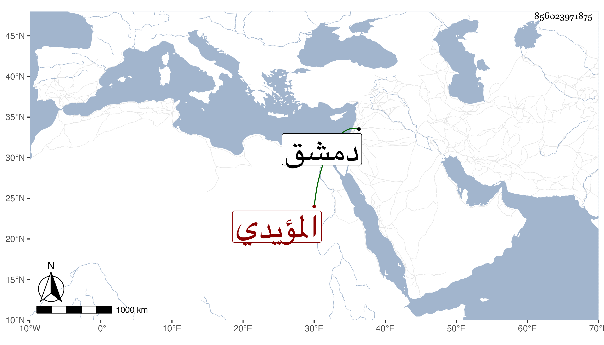

0902Sakhawi.DawLamic.ITO20230111-ara1.EIS1600.856023971875
Biography ID: 856023971875
668
مغلباي الأبو بكري المؤيدي شيخ الساقي . كان من خواصه وساقيه ثم أمره عشرة ثم صار بعده طبلخاناه إلى أن أمسكه الأتابك ططر بدمشق في سنة أربع وعشرين وأنعم بإقطاعه على صهره البدر حسن بن سودون الفقيه ولعله كان آخر العهد به .
